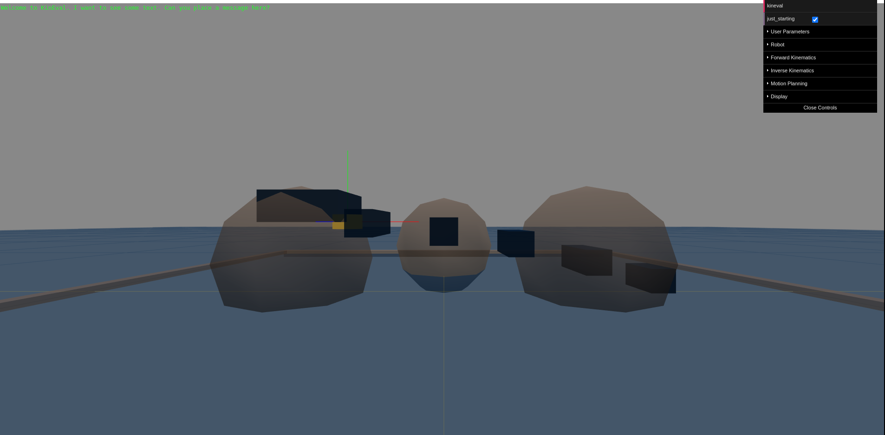
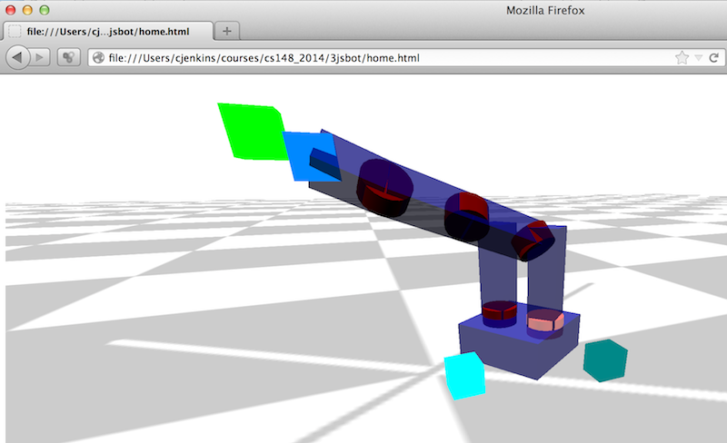
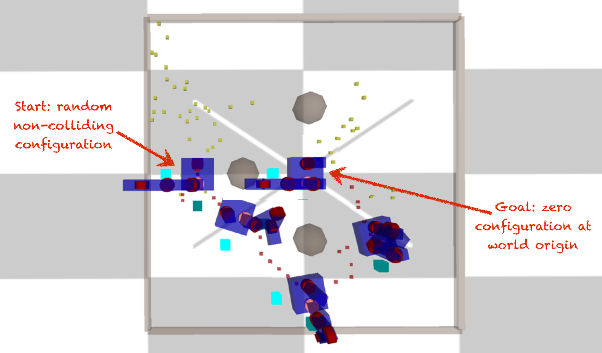
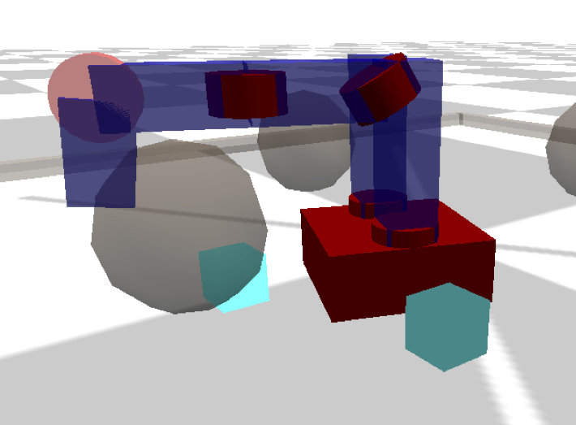

Introduction
Introduction to Autonomous Robotics (AutoRob) is an introduction to core topics in the modeling and control of autonomous robots. The AutoRob course can be thought of as the foundation to build “brains for robots”. That is, given a robot as a machine with sensing, actuation, and computation, how do we develop programs that allow the robot to function autonomously? Such programs involve functions for robots to perceive the world, make decisions towards achieving a given objective, and transforming decided actions into motor commands. These functions are essential for modern robotics, especially for mobile manipulators such as the pictured Fetch and PR2 robots.
The AutoRob course focuses on the issues of modeling and control for autonomous robots with an emphasis on manipulation and mobility. Successful completion of AutoRob will result in code modules for "mobile pick-and-place". That is, given a robot and perception of the robot's environment, resulting code modules can enable the robot to pick up an object at an arbitrary location and place the object in a new location.
AutoRob projects ground course concepts through implementation in JavaScript/HTML5 supported by the KinEval code stencil (snapshot below from Mozilla Firefox). These projects will cover basic physical simulation (Lagrangian dynamics, numerical integrators), proportional-integral-derivative control, forward kinematics (3D geometric matrix transforms, matrix stack composition of transforms, axis-angle rotation by quaternions), inverse kinematics, (gradient descent optimization, Jacobians for velocity kinematics), and motion planning (simple collision detection, sample-based motion planning). Optional non-project topics will be covered for A* planning, potential field navigation, Bayesian filtering, Monte Carlo localization, and Newton-Euler dynamics.

AutoRob projects will roughly follow conventions and structures from the Robot Operating System (ROS) and Robot Web Tools (RWT) software frameworks, as currently used on the Fetch and PR2 robots. These conventions include the URDF kinematic modeling format, ROS topic structure, JSON-based messaging. Kineval uses threejs for in-browser 3D rendering and Numeric Javascript for select matrix routines. Auxiliary code examples and stencils will often use the jsfiddle development environment.
Related Courses
AutoRob is a computing-friendly pathway into robotics, but does not cover the whole of robotics. The scope of AutoRob is robot modeling and control, which is well-suited as preparation for a Major Design Experience in EECS 467 (Autonomous Robotics Laboratory). ME 567 (Robot Kinematics and Dynamics) and AutoRob share coverage of many similar topics, with ME 567 providing more in-depth mathematical analysis and usage of Denavit-Hartenberg parameters.
AutoRob is also a complement to courses covering perception (EECS 568 Mobile Robotics, EECS 442 Computer Vision), robot building (EECS 498 Hands-on Robotics, ME 552 Mechatronics), robot simulation (ME 543 Analytical and Computational Dynamics), controls systems (EECS 460 Control Systems Analysis and Design, EECS 461 Embedded Control Systems), and artificial intelligence (EECS 492 Introduction to Artificial Intelligence), as well as general graduate courses in robotics (ROB 501 Math for Robotics, ROB 550 Robotic Systems Laboratory).
Course Staff
Instructor
Chad Jenkins
ocj addrsign umich
Office: Beyster 3644
Office Hours: Monday 3:30-5pm, Thursday 1-3pm
Meeting time/place
Monday, Wednesday 1:30-3:00
DOW 2150
DOW 2166
Discussion channel
Prerequisites
This course has recommended prerequisites for "Linear Algebra" and "Data Structures and Algorithms", or permission from the instructor.
Programming proficiency: EECS 281 or proficiency in data structures and algorithms should provide an adequate programming background for the projects in this course. Interested students should consult with the course instructor if they have not taken EECS 281 or its equivalent, but have some other strong programming experience.
Mathematical proficiency: Math 214, 217, 417, 419 or proficiency in linear algebra should provide an adequate mathematical background for the projects in this course. Interested students should consult with the course instructor if they have not taken one of the listed courses or their equivalent, but have some other strong background with linear algebra.
Recommended optional proficiency: Differential equations, Computer graphics, Computer vision, Artificial Intelligence
The instructor will do their best to cover the necessary material, but no guarantees. Linear algebra will be used extensively in relation to 3D geometric transforms and systems of linear equations. Computer graphics is helpful for under-the-hood understanding of threejs. Computer vision and AI share common concepts with this course. Differential equations are used to cover modeling of motion dynamics and inverse kinematics, but not explicitly required.
Textbook
The AutoRob course is compatible with both the Spong et al. and Corke textbooks (listed below), although only one of these books is needed. Depending on individual styles of learning, one textbook may be preferrable over the other. Spong et al. is the listed required textbook for AutoRob (as well as ME 567) and is supplemented with additional handouts. The Corke textbook provides broader coverage with an emphasis on intuitive explanation.
Robot Modeling and Control
Mark W. Spong, Seth Hutchinson, and M. Vidyasagar
Wiley, 2005
Available at Amazon
Alternate textbook
Robotics, Vision and Control: Fundamental Algorithms in MATLAB
Peter Corke
Springer, 2011
Optional texts
JavaScript: The Good Parts
Douglas Crockford
O'Reilly Media / Yahoo Press, 2008
Principles of Robot Motion
Howie Choset, Kevin M. Lynch, Seth Hutchinson, George A. Kantor, Wolfram Burgard, Lydia E. Kavraki, and Sebastian Thrun
MIT Press, 2005
Projects and Grading
The AutoRob course will assign 7 projects (6 programming, 1 oral). AutoRob projects are graded as “checked” (completed) or “due” (incomplete). Prior to being assigned, upcoming projects will have the status of "pending." In terms of workload, each project is expected to take approximately 4 hours of work on average (as a rough estimate).
Individual final grades are assigned based on the sum of points earned from coursework (detailed in subsections below). Based on this sum, an overall grade for the course is earned as follows: An "A" grade in the course is earned if graded coursework sums to 93 points or above; A "B" grade in the course is earned if graded coursework sums to 83 points or above; a "C" grade in the course is earned if graded coursework sums to 73 points or above. The instructor reserves the option to assign appropriate course grades with plus or minus modifiers.
The timing and due dates for course projects and quizzes will be announced on an ongoing basis. All assignments checked by the end of classes.
EECS 398-002: Introduction to Autonomous Robotics
Beyond AutoRob projects, EECS 398-002 will additionally have 4 short quizzes. Each completed project is weighted as 13 points and each correctly answered quiz question is weighted as 1 point. Each quiz will consist of 5 short questions that will be within the scope of previously graded projects. In other words, each quiz question should be readily answerable given knowledge from correctly completing projects that have been assigned.
EECS 598-010: Robot Modeling and Control
EECS 598-010 will have advanced requirements for each AutoRob project. Each completed project is weighted as 15 points. The advanced project requirements will be specified with each assignment. Examples advance requirements include implementation of RK4 numerical integration for a double pendulum, inverse kinematics by Cyclic Coordinate Descent, and one additional motion planning algorithm.
Project Submission and Regrading
Git repositories will be used for project implementation, version control, and submission. Project implementations are submitted as branches in your assigned repository. These branches must be submitted prior to the due date for each assignment. Your implementation will be checked out and executed by the course staff. You will be notified by the course staff whether your implementation is sufficient for checking off the assignment. If your assignment is insufficient for receiving a check, you are allowed one regrade (per assignment) with 2 weeks of notification. If deemed necessary, the course staff may require an interactive demonstration of your implementation and/or a web-based written report.
Final Grading
All grading will be finalized on April 22, 2016. Regrading of specific assignments will be done upon request during office hours. No regrading will be done after grades are finalized.
Repositories
You are expected to provide a private git repository for your work in this course with the course instructor added as a read/write collaborator. If needed, the course staff can assist in the setup of an online git repository through providers such as github or bitbucket.
Please refer to the Pro Git book for an in-depth introduction to git and version control. As different people often learn through different styles, the Git Magic tutorial has also proved quite useful when a different perspective is needed. git: the simple guide has often been a great and accessible quick start resource.
We expect students to use these repositories for collaborative development as well as project submission. It is the responsibility of each student group to ensure their repository adheres to the Collaboration Policy and submission standards for each assignment. Submission standards and examples will be described for each assignment as needed.
Late Policy
Do not submit assignments late. The course staff reserves the right to not grade late submissions.
Collaboration Policy
This policy covers all course material and assignments unless otherwise stated. Course material, concepts, and documentation may be discussed with anyone. Assignments may be discussed with the other students at the conceptual level. Discussions may make use of a whiteboard or paper. Discussions with others (or people outside of your assigned group) cannot include writing or debugging code on a computer or collaborative analysis of source code that is not your own. You may take notes away from these discussions, provided these notes do not include any source code.
The code for your implementation may not be shown to anyone outside of your group, including granting access to repositories or careless lack of protection. You do not need to hide the screen from anyone, but you should not attempt to show anyone your code. When you are done using any robot device such that another group may use it, you must remove all code you have put onto the device. You may not share your code with others outside of your group. At any time, you may show others the implemented program running on a device or simulator, but you may not discuss specific debugging details about your code while doing so.
This policy applies not only applies to collaboration during the current semester, but also any past or future instantiations of this course. Although course concepts are intended for general use, your implementation for this course must remain private after the completion of the course. It is expressly prohibited to share any code previously written and graded for this course with students currently enrolled in this course. Similarly, it is expressly prohibited for any students currently enrolled in this course to refer to any code previously written and graded for this course.
Should you fail to abide by this policy, you will receive no credit for this course. The University of Michigan reserves the right to pursue any means necessary to ensure compliance. This includes, but is not limited to prosecution through The College of Engineering’s Honor Council, which can result in your suspension or expulsion from the University of Michigan. Please refer to the Engineering Honor Council for additional information.
Course Schedule (tentative and subject to change)
| Jan 6 |
Initialization: Course overview, Project overview, Some robotics history |
Spong Ch.1 Corke Ch.1 |
|
| Week 2 | |||
| Jan 11 |
JavaScript and git tutorial |
Crockford HTML5/JS examples hello and hello_anim |
|
| Jan 13 |
Simple Pendulum: Cartesian vs. Generalized coordinates, Lagrangian equation(s) of motion |
Spong 7.1-3 Corke 9.1-3 |
Out: Getting Started |
|
Numerical Integrators: Initial value problem, Integrators: Euler, Verlet, Runge-Kutta 4 |
Handout 1, 2, 3 | Out: Pendularm | |
| Week 3 | |||
| Jan 18 |
Martin Luther King Jr. Day: Help broaden participation in computing and robotics |
||
| Jan 20 |
Motion Control: Open-loop vs. Closed-loop control, PID control |
Spong 6.3 Handout |
Due: Getting Started |
| Week 4 | |||
| Jan 25 |
Linear Algebra Refresher: Systems of linear equations, Vector operations, Matrix operations |
Spong A-B Corke D |
|
| Jan 27 |
Forward Kinematics: Kinematic chains, URDF kinematic specification, matrix stack traversal, DH parameters |
Spong 3.1-2 Corke 7.1-2 |
Due: Pendularm Out: Forward Kinematics |
| Week 5 | |||
| Feb 1 | Quaternions: Euler angles, Gimbal lock, Axis-angle rotation, Matrix stack with joint controls |
Handout 1,
2
Corke 2.2-3 |
|
| Feb 3 |
Reactive Controllers: Reactive and Deliberative Decision Making, Finite State Machines, Subsumption Architecture |
||
| Week 6 | |||
| Feb 8 | 3D Point Cloud Segmentation: Robot Middleware, ROS, rosbridge, Point Clouds, Principal Components Analysis, Connected Components |
PCA Rusu 2008 (Sec 4.2) Toris 2015 |
|
| Feb 10 |
398-002: Quiz 1 598-010: Robot Simulation Session |
IK robot game | Due: Forward Kinematics Out: Dance Contest |
| Week 7 | |||
| Feb 15 |
Inverse Kinematics 1 - Closed-form: Joint vs. Endeffector control, Planar 2-link arm, Closed form solutions, Cyclic Coordinate Descent |
Spong 3.3 Corke 7.3 |
|
| Feb 17 | Inverse Kinematics 2 - Manipulator Jacobian: Gradient descent, Manipulator Jacobian, Jacobian transpose, pseudoinverse | Spong Ch. 4 Corke Ch. 8 |
|
| Week 8 | |||
| Feb 22 | Bug Algorithms: Reaction vs. Deliberation, Bug0, Bug1, Bug2, Tangent Bug | Corke Ch. 5 | |
| Feb 24 |
398-002: Extended office hours 598-010: Robot simulation session |
Due: Dance Contest Out: Inverse Kinematics |
|
| Week 9: Spring Break | |||
| Feb 29 - Mar 4 | |||
| Week 10 | |||
| Mar 7 | Path Planning: A-star grid search, Potential fields, Wavefront planning | Spong Ch. 5 | |
| Mar 9 | 398-002: Quiz 2 598-010: Newton-Euler recursion |
||
| Week 11 | |||
| Mar 14 | Configuration Spaces: Workspaces vs. Configuration spaces, Minkowski sum | ||
| Mar 16 | Motion Planning: Probabilistic roadmaps, Rapidly-exploring Random Trees, RRT-Connect motion planning (Kuffner/LaValle) | Kuffner, LaValle 1999 | Due: Inverse Kinematics Out: Motion Planning |
| Week 12: No class - off-site meeting | |||
| Mar 21-23 | |||
| Week 13 | |||
| Mar 28 | Quiz 3, Collision Detection: Axis-Aligned Bounding Boxes, Separating Axis Theorem | Gottschalk et al. 1996 | |
| Mar 30 | Simultaneous Localization and Mapping: Robot odometry, Laser rangefinding, Loop closure, SGD-SLAM paper (Olson et al.) | Olson et al. 2006 | |
| Week 14: National Robotics Week | |||
| Apr 4 | Robot Localization: Bayes rule, Bayesian filtering, Monte Carlo Localization (Dellaert et al.) | Dellaert et al. 1999 | |
| Apr 6 | RGBD Mapping: Depth cameras, 3D point cloud processing, Iterative Closest Point algorithm, 3D mapping (Fox et al.) | Rusu et al. 2008 | Due: Motion Planning Out: Best Use of Robotics |
| Week 15 | |||
| Apr 11 | Quiz 4, Scene Estimation: Symbolic task planning, Sequential mobile manipulation, Axiomatic Particle Filtering (Sui et al.) | Sui et al. 2015 | |
| Apr 13 | In-class presentations | Due: Best Use of Robotics | |
| Week 16 | |||
| Apr 18 | Regrading session | ||
| Apr 22 | Grading finalized | ||
Slides from this course borrow from and are indebted to many sources from around the web. These source include a number of excellent robotics courses:
Assignment 1: Getting Started (Warm up)
Due 1pm, Wednesday, January 20, 2016
In this assignment, you should clone the kineval_stencil repository into your working repository for the course. kineval_stencil contains a code template for this assignment as well as all projects in the course. If you open "home.html" in this repository, you should see the jittering disconnected pieces of a robot (described in "robots/mr2.js"), similar to the snapshot below. This initial mode is the "starting point" state of the stencil to help build familiarity with JavaScript/HTML5 and KinEval.
Your task is to make these objects in starting point mode responsive to keyboard commands. Specifically, these objects will move upward, stop/start jittering, move closer together, and further apart (although more is encouraged). To do this, you will modify "kineval/kineval_startingpoint.js" at the sections marked with "STENCIL". These sections also include code examples meant to be a quick (and very rough) introduction to JavaScript, assuming programming competency in another language.
Brief Code Overview
Within the KinEval stencil, the functions my_animate() and my_init() in "home.html" are the principal access points into animation system. my_animate() is particularly important as it will direct the invocation of functions we develop throughout the AutoRob course. my_animate() and my_init() are called by the primary process that maintains the animation loop: kineval.animate() and kineval.init() within "kineval/kineval.js". IMPORTANT: "kineval/kineval.js", kineval.animate(), and kineval.init() should not be modified. For starting point mode, my_animate() will call startingPlaceholderAnimate() and startingPlaceholderInit(). startingPlaceholderInit() contains JavaScript tutorial-by-example code that initializes variables for this project. startingPlaceholderAnimate() contains keyboard handlers and code to update the positioning of each body of the robot. By modifying the proper variables at the locations labed "STENCIL", this code will update the transformation matrix for each geometry of the robot (stored in the ".xform" attribute) as a translation in the robot's world. The ".xform" transform for each robot geometry is then used by kineval.robotDraw() to have the browser render the robot parts in the appropriate locations.
Project Submission
To ensure proper submission of your assignments, please do the following:
- email the course instructor (ocj addrsign umich) with your name, email address, and pointer to your repository,
- ensure the course instructor knows what repository you are using, and your branch is created and not modified past project deadlines
- ensure the instructor (id:ohseejay) has push/admin access to your repository, which can be confirmed/addressed through email or office hours (or by seeing that the instructor has committed the file "grading.txt")
For turning in your assignment, create a branch in your repository labeled "Assignment-1". NOTE: spelling matters! The "Assignment-1" branch is essentially a tag and should not be merged back into the master. You should continue work from the master branch.
Assignment 2: Pendularm
Due 11:59pm, Thursday, January 28, 2016
To get a sense of physical dynamics and control, your task is to implement a physical simulator and servo controller for a frictionless simple pendulum with a rigid massless rod, and then control this system as a 1 DOF robot with a single motor.
For physical simulation, you will implement several numerical integrators for a pendulum with parameters specified in the code stencil. The numerical integrator will advance the state (angle and velocity) of the pendulum in time given the current acceleration (generated from the pendulum equation of motion). If implemented successfully, this ideal pendulum should oscillate about the vertical (where the angle is zero) proportional to the pendulum's initial angle.
Students enrolled in EECS 398-002 will implement numerical integrators for:
Students enrolled in EECS 598-010 will implement numerical integrators for:
For motion control, students in both EECS 398-002 and EECS 598-010 will implement a proportional-integral-derivative controller to control the system's motor to a desired angle. This PID controller should output control forces integrated into the system's dynamics. You will need to tune the gains of the PID controller for stable and timely motion to the desired angle for pendulum with parameters: length=2.0, mass=2.0, gravity=9.81.
For user input, you should be able to select the choice of integrator using the [0-4] keys (with no integration as a default), toggle the invocation of the servo controller with the 'c' key (which is off by default), decrement and increment the desired angle of the 1 DOF servoed robot arm use the 'q' and 'e' keys, and momentarily disable the servo controller with 's' key (and allowing the arm to swing uncontrolled).
Project Submission
For turning in your assignment, create a branch in your repository labeled "Assignment-2".
Additional Notes
Students in EECS 598-010 are strongly encouraged to extend their pendularm to a double pendulum.
Assignment 3: Forward Kinematics
Due 11:59pm, Friday, February 12, 2016In this assignment, you will render the forward kinematics (FK) of a robot, given its kinematic specification (in the "robots" subdirectory). To render the robot properly, you will compute matrix transforms for each link and joint of the robot based on the parameters of its hierarchy configuration. The computation of the matrix transform for each joint and link will allow KinEval's rendering support routines to properly display the full robot. We will assume the joints will remain in their zero position, saving joint motion for the next assignment.
Assuming proper completion of Assignment 1, ensure the following files are included (within script tags) in your "home.html". You will modify these files for implementing FK:
- "kineval/kineval_robot_init.js" for initializing your robot object based on a given description object; modification is require to add parent and child references to each link
- "kineval/kineval_forward_kinematics.js" for implementing (a recursive) traversal over joints and links to compute transforms; traversal of forward kinematics is invoked from kineval.robotForwardKinematics() within my_animate() in home.html
- "kineval/kineval_matrix.js" for the implementation of your vector and matrix routines, such as for matrix multiplication, matrix generation, etc. in kineval_matrix.js
Robot Examples and Initialization
Each file in the "robots" subdirectory contains code to create a robot data object . This data object is initialized the kinematic description of a robot (as well as some meta information and rendering geometries). The kinematic description defines a hierarchical configuration of the robot's links and joints. This description is a subset of the Unified Robot Description Format (URDF) converted into JSON format. The basic features of URDF are described in this tutorial.
IMPORTANT: The given robot description files should NOT be modified. Code that requires modified robot description files will fail tests used for grading. You are welcomed and encouraged to create new robot description files for additional testing.
The selection of file with a robot description can occur directly in the URL for "home.html". As a default, the "home.html" in the KinEval stencil assumes the "mr2" robot description in "robots/robot_mr2.js". Another robot description file can be selected directly in the URL by adding a robot parameter. This parameter is segmented by a question mark and sets the robot file pointer to a given file local location, relative to "home.html". For example, a URL with "home.html?robot=robots/robot_urdf_example.js" will use the URDF example description.
In addition to the given initialization, you should extend the robot object to complete the kinematic hierarchy to specify the parent and children of each link. This modification should be made in the kineval.initRobotJoints() function in "kineval/kineval_robot_init.js". The children array of a link should always be defined, which would result in an empty array for leaf nodes in the kinematic tree.
Note: KinEval refers to links and joints as strings, not pointers, within the robot object. robot.joints (as well as robot.links) is an array of data objects that are indexed by strings. Each of these objects stores relevant fields of information about the joint, such as its transform (".xform"), parent (".parent") and child (".child") in the kinematic hierarchy, local transform information (".origin"), etc. As such, robot.joints['JointX'] refers to an object for a joint. In contrast, robot.joints['JointX'].child refers to a string ('LinkX'), that can then be used to reference a link object (as robot.links['LinkX']). Similarly, robot.links['LinkX'].parent refers to a joint as a string 'JointX' that can then then be used to reference a joint object in the robot.joints array.
Invoking Forward Kinematics
The function kineval.robotForwardKinematics() in "kineval/kineval_forward_kinematics.js" will be the main point of invocation for your FK implementation. This function is responsible for updating matrix transforms for the frame of each link and joint with respect to the global world coordinates. The computed transform for each frame of the robot needs to be stored in the ".xform" field. For a given link named 'LinkX', this xform field can be accessed as robot.links['LinkX'].xform. For a given joint named 'JointX', this xform field can be accessed as robot.joints['JointX'].xform. Once kineval.robotForwardKinematics() completes, the updated transforms for each frame are used by the function kineval.robotDraw() in the support code to render the robot.
A matrix stack recursion can be used to compute these global frames, starting from the base of the robot (specified as a string in robot.base). This recursion should use local translation and rotation parameters of each joint in relation to its parent link in its traversal of the hierarchy. For a given joint 'JointX', these translation and rotation parameters are stored in the robot object as robot.joints['JointX'].origin.xyz and robot.joints['JointX'].origin.rpy, respectively. The current global translation and rotation for the base of the robot (robot.base) in the world coordinate frame is stored in robot.origin.xyz and robot.origin.rpy, respectively.
To run your FK routine, you must toggle out of starting point mode. This toggle can be done interactively within the GUI menu or by setting kineval.params.just_starting to false. The code below in "home.html" controls starting point mode invocation, where single line can be uncommented to use FK mode by default:
// set to starting point mode is true as default
// set to false once starting forward kinematics project
//kineval.params.just_starting = true;
if (kineval.params.just_starting == true) {
startingPlaceholderAnimate();
kineval.robotDraw();
return;
}
If implemented properly, the "robots/robot_urdf_example.js" example should produce the following rendering:
The "robots/robot_mr2.js" example should produce the following:
The "robots/robot_crawler.js" example should produce the following:
Interactive Hierarchy Traversal
Additionally, a correct implementation will be able to interactively traverse the kinematic hierarchically by changing the active joint. The active joint has focus for user control, which will be used in the next assignment. For now, we are using the active joint to ensure your kinematic hierarchy is correct. You should be able to move up and down the kinematic hierarchy with the "k" and "j" keys, respectively. You can also move between the children of a link using the "h" and "l" keys.
Orienting Joint Rendering Cylinders
The cylinders used as rendering geometries for joints are not aligned with joint axes by default. The support code in Kineval will properly orient joint rendering cylinders. To use this functionality, simply implement a vector cross product function named vector_cross() in your matrix routines. vector_cross() will be automatically detected and used to properly orient each joint rendering cylinder.
EECS 598-010 Requirement
Students in EECS 598-010 must implement the assignment as described above to work with given examples as well as the Fetch robot description. The file "robots/fetch/fetch.urdf/js" contains the robot data object for the Fetch kinematic description. This JavaScript file converted from the Fetch URDF description for ROS. ROS uses a different default coordinate system than threejs, which needs to be taken into account in the FK computation. Coordinate frames in ROS assumes that the Z, X, and Y axes correspond to the up, forward, and side directions, respectively. In contrast, threejs coordinate frames assume the Y, Z, and X correspond to the up, forward, and side directions. The variable robot.links_geom_imported will be set to true when geometries have been imported from ROS and set to false when geometries are defined completely within the robot description file.
A proper implementation for fetch.urdf.js example should produce the following:
Project Submission
For turning in your assignment, create a branch in your repository labeled "Assignment-3".
Assignment 4: Robot FSM Dance Contest
Due 11:59, Friday, February 26, 2016
For this assignment, you will now enable your robot to execute a dance routine by adding motor rotation to its joints and creating a Finite State Machine (FSM) controller over pose setpoints. Your FK implementation will now be extended to consider angular rotation about each joint axis using quaternions for axis-angle rotation. The positioning of each joint with respect to a given pose setpoint will be controlled by an simple P servo implementation (based on the Pendularm assignment). You will implement an FSM controller to update the current pose setpoint based on the robot's current state and predetermined sequence of setpoints. For a single robot, you will choreograph a dance for the robot by creating an FSM with your design of pose setpoints and an execution sequence.
This controller for the "mr2" was a poor attempt at robot Saturday Night Fever (please do better):

This updated dance controller for the Fetch robot is a bit better, but still very far from optimal:
Assuming proper completion of Assignment 3, ensure the following files are included (within script tags) in your "home.html". You will modify these files for implementing axis-angle rotation, the pose setpoint controller, and the FSM controller:
- "kineval/kineval_quaternion.js" for your implementation of quaternions for axis-angle rotation in 3D
- "kineval/kineval_controls.js" includes function kineval.applyControls() to apply a control update to the robot's base and angle of each joint, as well as updating the camera position; this update just does an addition and does not consider a physical model of dynamics
- "kineval/kineval_servo_control.js" for your implementation of a P servo controller and an FSM pose sequencer
Joint Axis Rotation and Interactive Control
Each joint of the robot needs several additional properties for joint rotation and control. These joint properties for the current angle rotation (".angle"), applied control (".control"), and servo parameters (".servo") have already been created within the function kineval.initRobotJoints(). The joint's angle will be used to calculate a rotation about the joints (normal) axis of rotation vector, specified in the ".axis" field. The 3D rotation due to joint movement should be accounted for in the robot's forward kinematics and implemented as quaternions in "kineval/kineval_quaternion.js".
If joint axis rotation is implemented correctly, you should be able to use the 'u' and 'i' keys to move the currently active joint. These keys respectively decrement and increment the ".control" field of the active joint. Through the function kineval.applyControls(), this control value effectively adds an angular displacement to the joint angle.
Interactive Base Movement Controls
The user interfaces also enables controlling the global position and orientation of the robot base. In addition to joint updates, the system update function kineval.applyControls() also updates the base state (in robot.origin) with respect to its controls (specified in robot.controls). With the support function kineval.handleUserInput(), the 'wasd' keys are purposed to move the robot on the ground plane with 'q' and 'e' keys for lateral base movement. In order for these keys to behave properly, the heading and lateral directions of the robot base are needed such that they are expressed as unit vectors in the global frame. These vectors need to be computed within your FK implementation and stored within two global variables: robot_heading and robot_lateral. Each of these variables should be a homogeneous 3D vectors stored as a 2D array.
If robot_heading and robot_lateral are implemented properly, the robot should now be interactively controllable in the ground plane.
Pose Setpoint Controller
Once joint axis rotation is implemented, you will implement proportional setpoint controller for the robot joints in function kineval.robotArmSetpointController() within "kineval/kineval_setpoint_controller.js". This setpoint controller uses the current angle (".angle"), desired angle, and servo gains (specified in the ".servo" object) of each joint to output a control (".control") for the joint. The desired angle for a joint 'JointX' is stored in kineval.params.setpoint_target['JointX'] as a scalar. All of these joint object properties are initialized in the function kineval.initRobotJoints() in "kineval/kineval_robot_init.js".
For testing, a "clock movement" controller has been provided as the function setpointClockMovement() in "kineval/kineval_setpoint_controller.js". This function can be invoked by holding down the 'c' key or from the UI. This controller goes well with this song.
The robot can servo to the current pose setpoint by holding down the 'o' key or selecting 'persist_pd' from the UI. Pressing the '0' key sets the current setpoint to the zero pose, where all joint angles are zero. Stored in kineval.setpoints, up to 9 other arbitrary pose setpoints can be stored by KinEval for pose control. The current robot pose can be interactively stored by pressing "Shift+number_key" (e.g., "Shift+1"). The current setpoint can be assigned a stored pose by pressing one of the non-zero number keys [1-9].
FSM Controller
Once your pose setpoint controller is work, a FSM controller should be implemented in the function kineval.setpointDanceSequence() in "kineval/kineval_setpoint_control.js". The reference implementation uses pose setpoints initialized and stored in kineval.setpoints with a sequence of indices stored in kineval.params.dance_sequence_index and playback index stored in kineval.params.dance_pose_index. If this convention is not used, the following line in "kineval/kineval_userinput.js" will require modification:
if (kineval.params.update_pd_dance)
textbar.innerHTML += "executing dance routine, pose " + kineval.params.dance_pose_index + " of " + kineval.params.dance_sequence_index.length;
EECS 598-010 Requirements
Students in EECS 598-010 must implement the assignment as described above for the Fetch robot with two additional requirements: 1) proper enforcement of joint limits for Fetch robot description, and 2) integration of their code with a Gazebo simulation of the Fetch using rosbridge. Your code can interface with a robot (or simulated robot) running rosbridge/ROS using the function kineval.rosbridge() in "kineval/kineval_rosbridge.js". This code requires that the rosbridge_server package is running in a ROS run-time environment and listening on a websocket port, such as for ws://fetch7:9090. If your FK implementation is working properly, the model of your robot in the browser will update along with the motion of the robot based on the topic subscription and callback. This functionality works seamlessly between real and simulated robots. To control the robot, a rosbridge publisher must be written to update the ROS topic "/arm_controller/follow_joint_trajectory/goal" with a message of type "control_msgs/FollowJointTrajectoryActionGoal".
Machines running rosbridge, ROS, and Gazebo for the Fetch will be available during special sessions of the class. Students are encouraged to install and run the Fetch simulator on their own machines based on this tutorial.
Project Submission
For turning in your assignment, create a branch in your repository labeled "Assignment-4" and post a video of your dance controller in action to the course discussion channel.
Assignments beyond this point have not been assigned. The descriptions below are unofficial and tentative.
Assignment 5: Inverse Kinematics
Due 9am, Wednesday, March 16, 2016
For this assignment, you will now control your robot to reach to a given point through inverse kinematics for position control of the robot endeffector. Inverse kinematics will be implemented through both the Jacobian Transpose and Jacobian Pseudoinverse methods, although only one will be invoked at run-time.

Assignment 6: Motion Planning
Due 9am, Wednesday, April 6, 2016
For this assignment, you will now implement a collision-free motion planner to enable your robot to navigate from a random configuration in the world to its home configuration (marked by the "X" on the world floor). Motion planning will be implemented through the RRT-Connect algorithm (described by Kuffner and LaValle). 
Even before your planner is implemented, you can use the collision system interactively with your robot. The provided kineval.isCollision() function will test the current configuration of the robot. If a collision occurs, the base of the robot will be displayed as a solid red. The call to kineval.isCollision() should be placed within my_animate() in home.html:
// show if robot is currently in collision
kineval.isCollision();

Assignment 7: The best use of robotics?
Due 1:30pm, Wednesday, April 13, 2016
Scenario: An investor is considering giving you 3 million dollars (cold hard USD cash, figuratively). This investor has been impressed by work with kineval and other accomplishments while at the University of Michigan. They are convinced you have the technical ability to make a compelling robot technology... but, they are unsure how this technology could produce something useful. Your task is to make a convincing pitch for a robotics project that would yield a high return on investment. The pitch judged to be the most convincing will get first dibs.
Additional Materials
Appendix: Git-ing Started with Git
Using version control effectively is an essential skill for both the AutoRob course and, more generally, contributing to advanced projects in robotics research and development. git is arguably the most widely used version control system at current. Examples of the many robotics projects using git include: Lightweight Communications and Marshalling, the Robot Operating System, Robot Web Tools, Fetch Robotics, the NASA Robonaut 2, and the Rethink Baxter. To help you use git effectively, the course staff has added the tutorials below for getting started with git. This is meant to be a starting guide to using git, bash, and Git Bash. For a more complete list of commands and features of git, you can refer to the following guides: The Git Pro book or The Basic git command line reference for windows users.
Installing git
The AutoRob course assumes git is used from an command line terminal to work with a git hosting service, such as GitHub or Bitbucket. Such terminal environments are readily available in Linux and Mac OSX through their respective terminal programs. For MS Windows, we are recommending Git Bash, although several other viable alternatives exist. Applications that provide a Graphical User Interface for git are not recommended.
git can be installed on Linux through a common package managment system, based on your distribution, with one of the following commands:
sudo yum install git-all
sudo apt-get install git-all
For Mac OSX, git can be installed on its own using the Git-OSX-Installer or as part of larger set of Xcode build tools. For MS Windows, we are recommending Git Bash, although several other viable alternatives exist.
If you have a command line terminal running, you should see a shell environment that looks something like this (screenshot from Git Bash):
If you have git installed, you should should be able to enter the "git" command and see the following usage information printed (screenshot from OSX):
Cloning your repository
The most common thing that you will need to do is pull and push files from and to your git hosting service. Upon opening Git Bash, you will need to go to the location of both your GitHub/Bitbucket repository on the web and your git workspace on your local computer. Our first main step is to clone your remote repository onto your local computer. Towards this end, the next step is to open your terminal application and determine your current directory, assuming you will use this directory to create a workspace. For Linux and OSX, the terminal should start in your home directory, often "/home/username" or "/Users/username". For Git Bash on Windows, the default home directory location could be the Documents in your user directory, or the general user folder within "C:\Users".
From your current directory, you can use Bash commands to view and modify the contents of directories and files. You can see a list of the files and folders that can be accessed using ls (list) and change the folder using the command cd (change directory) as shown below. If you believe that the directory has files in addition to folders, but would like a list of just the folders, then the command ls –d */ can be used instead of ls. Below is a quick summary of relevant Bash commands:
- "ls" prints a listing of files in the current directory
- "pwd" prints the location of the current directory in the filesystem
- "cd [NameFolder]" moves the terminal to a new directory in the filesystem
- "ls [Expression]" prints a listing of files in the current directory matching the given Expression; ls r* prints all files starting with the character 'r'
- "mkdir [NameFolder]" creates a folder within the current directory. If the folder name has spaces, then NameFolder will need to be in double quotes.
- "rmdir [NameFolder]" removes a specified empty folder. If it is not empty, the folder will not be removed.
- "rm –rf [NameFolder]" removes a specified folder and all the contents
- "touch [FileName]" creates a single empty text file
- "touch [FIleName1.txt] [FileName2.txt]..." creates multiple empty text files
- "rm [FileName]" removes a specific file from the current directory
- "rm –i
You are now ready to clone a copy of your remote repository and populate it with files for AutoRob projects. It assumed that you have already created a repository on your git hosting service, given the course staff access to this repository, and provided a link of your repository to the course staff. This repository link (in the form of "https://github.com/user_name/repository_name.git") will now be used to clone a copy of your remote repository onto your local machine using the following git command below. This command will clone the repository contents to a subdirectory labeled with the name of the repository:
git clone [repository URL link]
This directory should be listed and inspected to ensure it has been cloned with the contents of the repository, matching the remote repository from your git hosting service. If this is a new repository, it is not problem for this directory to be empty:
ls [repository_name]
You can also check for differences between the files on your computer and the remote repository using git status as shown below. If you receive the message shown in the example below, then there are no differences. If there are differences, then it will have the number of files which are different highlighted in red.
$ git status
On branch master
Your branch is up-to-date with 'origin/master'.
nothing to commit, working directory clean
Important: workspace is not the same as repository
You should now have a local copy of your repository with a workspace in a subdirectory. It is critical to note that your local repository is different than the subdirectory with your current workspace. Your workspace is not automatically tracked by the version control system and considered ephemeral. Any changes made to your workspace must be committed back into the local repository to be recognized by the version control system. Further, any changes committed to your local repository must also be pushed remotely to be recognized by your git hosting service. Thus, any changes made to your workspace can be lost if not committed and pushed, which will be discussed more in later sections.
Populating your repository with project stencil code
In a separate directory, clone the kineval-stencil repository to a subdirectory on your local machine:
cd [home_directory]
git clone https://github.com/ohseejay/kineval-stencil.git
Inspect this directory to ensure it has been cloned with the contents of the repository:
cd kineval-stencil
ls
and open "home.html" from this directory in a web browser and ensure you see the starting point picture for Assignment 1. Then, copy the kineval-stencil files to the directory with your workspace
cd [home directory]
cp -r kineval-stencil/* /
As these copied files are new to your working repository, they need to be added to the repository to ensure they are tracked for version control. These files are added with the following commands:
cd [repository name]
git add *
Below is a more detailed summary of git commands for adding files from your workspace to your repository:
- "git add" adds changed files to the next commit. There are several different options which can follow this command.
- "git add –A: adds all new files and changes to the next commit including deletions
- "git add ." adds all new files and changes to the next commit without deletions
- "git add –u" adds all changes to the next commit without new files
Commit and push to update your repository
Whenever you make any significant changes to your repository, these changes should be committed to your local repository and pushed to your remote repository. Such changes can involve adding new files or modifying existing files in your local workspace. For such changes, you will first commit changes from your workspace to your local repository using the git commit command:
git commit -a -m "message describing changes"
and then pushing these changes from your local repository to a synced repository on your git hosting service:
git push
This commit will occur to the "master" branch of your repository.
Note: the change files must be located in the correct repository folder on your local computer and these commands should be performed in the local workspace directory. Below is a more detailed summary of git commands for adding files from your workspace to your repository:
- "git commit" commits files with changes. There are several options that can follow this. The message text is required and is good practice to list changes that you have made. GitHub is good at tracking changes.
- "git commit [FileName] -m 'Message'" commits changes to a specific file
- "git commit –a “Message'" commits all files changed since last commit
- "git commit –a –m “Message'" commits all files changed since last commit but not new files
- "git push" pushes the committed changes to remote repository
Once you have committed and pushed, your local workspace becomes irrelevant as your changes have been stored and tracked remotely. The local workspace can now be deleted without concern. This local workspace can also be updated with changes to the remote repository by pulling.
Pulling remote changes
Changes be made to your remote repository, potentially by other collaborators, without being tracked by your local repository. This can lead to potential versioning conflicts when committed changes contradict each other. For the AutoRob course, versioning conflicts should not be a problem because commits to your repository should be yours alone. That said, one good practice is to ensure your workspace, local repository, and remote repository are synced before making any changes. A brute force method for doing this is to re-clone your repository each time you begin to make changes. Another option is to pull remote changes into your local repository and workspace using the git pull command (or git fetch command):
cd [repository_name]
git pull
Below is a more detailed summary of git commands for pulling and fetching:
- "git pull [RemoteName]" is used for retrieving commits and merging the files to what is already on the computer. This may make changes to the files that are already there; effectively, this is a fetch followed by a merge. If you need to pull directly from the repository which already exists and has been accessed through the change directory command, then you do not list a [RemoteName].
- "git fetch
" used for retrieving commits from a repository that does not already exist on the user’s computer. This creates an exact copy of the files to your local repository and not to the workspace.
Branching
You will use branching to submit assignments for the AutoRob course. Branching is an effective mechanism for enabling changes to a repository to be done in parallel and then merged at a later point. A branch essentially creates a copy of your repository at a particular version. Branches are independently tracked by the version controller and can be merged together when requested (which collaboratively results in a "pull request"). The larger story for branching and merging is outside the scope of AutoRob.
You are expected to work primarily out of the "master" branch of your repository. Once you have completed an assignment, you will create a copy of your master branch with the proper assignment label. This allows you to continue to work on your master branch while a frozen copy of your assignment is graded.
The simplest means for branching in this context is to use the branching feature from the webpage of your remote repository. From GitHub, simply select the master branch from the "Branch: " button and enter the name of the branch to be created. From Bitbucket, select the "Branches" icon from the left hand toolbar and follow the instructions for branch creation. If successful, you should see a list of branches that can each be inspected for their respective contents. Branches can also be deleted from this interface.
A branch can also be created from the command line by the following, which will create a copy of the current branch:
git branch [branch_name]
You can switch between branches with the following command:
git checkout [branch_name]
as well as clone a specific branch from a repository:
git clone -b [branch_name] [repository URL link]
Good luck and happy hacking!